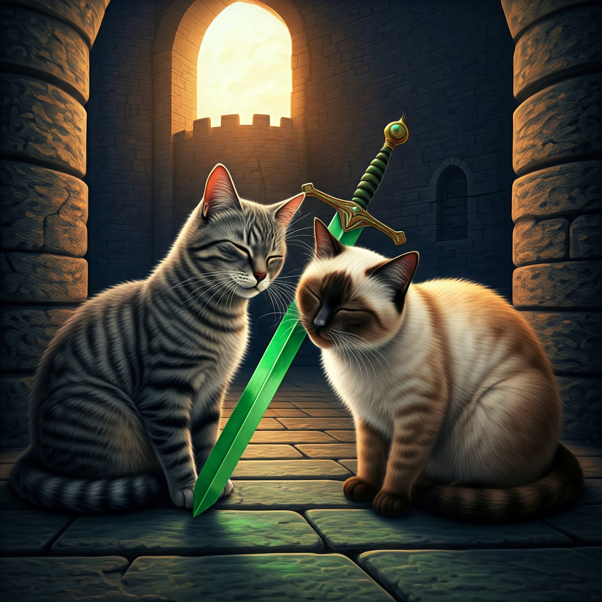

You chose to fight with the Cat Nip Sword.
As soon as you pull out the sword, the shadow of a cat flies through the sky.
"It's my Master Lilas the Tabby Cat!" Sausage says.
The tabby cat lands onto the ground. "What smells so good?" Lilas asks.
"Well, must be the cat nip right here," you point at your sword.
Lilas runs towards it and starts to rub herself against it.
Your cat Senna cannot wait either. She joins Lilas to rub agaist the sword and smell the tasty cat nip.
"But Master, do you see who it is? It's your enemy Senna the Seal Cat," Sausage is confused.
Lilas looks at Senna, and says: "You are mistaken. I said Senna and I fought a little.
All cats do it as a gesture of friendly play, not the kind of violent fighting you think of."
You ask Lilas if she wants to join you and Senna. Lilas agrees.

Having another cat is the best treasure that you decide to conclude this adventure.
With Lilas' guidance, you three return home safely and enjoy some tasty cat food.
The End